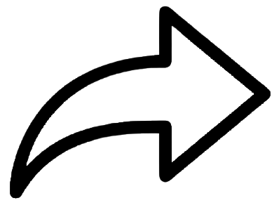

Want to start coding and don’t know where to start? Don’t worry we’re here for you
In a male-dominated industry, girls and women struggle in kick-starting their journey in the field of programming without the proper guidance and resources, coding can seem confusing, exhausting and sometimes really expensive, especially in Egypt. Our goal here is to help you take your first steps into the world of coding by gathering free resources and show you inspiring stories of other females who conquered the Egyptian society’s stereotypes.
Articles

Many don’t believe that women can be as successful as men in fields related to math and science. Coding and computer programming have particularly been male-dominated fields, in the West as well as in the Arab world. This perception has inspired the formation of several all-women coding and electronics groups, such as Girls Who Code, Women Who Tech, Women 2.0, and Girls in Tech which have opened two regional branches this year, in Cairo and Dubai.

CAIRO — Amid difficult economic circumstances and a job market where the participation of male workers is considerably higher than their female counterparts, Egyptian women are taking new steps in the technology sector, an area dominated by men. Motoon, which helps develop networks in the technology sector, partnered with the Google Developer Group (GDC) in Cairo to organize a conference titled “Egyptian Women in Technology,” which took place March 10. The conference at the Goethe Institute featured successful women and shed light on the main challenges and obstacles facing them.
Why strong university-level STEM representation by Egyptian women isn’t translating to the workplace: Egypt’s science, technology, engineering and mathematics (STEM) education is seeing a boost. Since 2011, at least 15 Education Ministry-owned STEM high schools have been set up. Many degrees offered by international branch campuses are STEM-focused. And Egypt understands women are globally underrepresented in STEM, with International Cooperation Minister Rania Al Mashat a particular advocate for more female participation in STEM education programs.